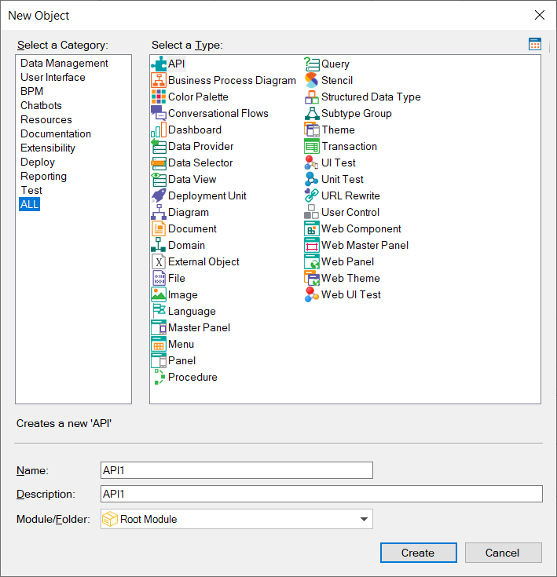

Flexibility and Quality with Genexus 17
Technology evolution is accelerating; the world is changing very fast. Keeping the pace of change or even being a driver for change is now more time- and effort- demanding than ever before, and it is just impossible to do so writing code by hand. With GeneXus 17, the solution modeling process is better than ever before, and this is key to generate software systems that automatically evolve and respond to high demands in terms of technology and the market. GeneXus 17 includes new objects to model different aspects of reality, it easies the development process for both the experienced and the newbie, it reduces platform lock-in, it generates for new technologies, and generates royalty-free code as always. All that together is proof of the flexibility and quality you get by choosing GeneXus 17. New Objects for modelingIn the previous sections of these release notes, some objects were already introduced: URL Rewrite object (ref Multi-experience, Friendly URLs), API object (ref Integration and evolution, API Mediation). But there is more news: GeneXus 17 adds a Master Panel object for more flexibility for Angular applications development. Furthermore, it adds UI Test object for modeling omnichannel test cases (now available for Apple and Android native apps, and in the future, for Angular too).  Panel Object: Modeling the UI for multiple channelsModeling the UI once and generating layouts for completely different platforms starts to be a reality in GeneXus 17. That's why the formerly called 'Panel for Smart Devices' Object has been renamed to Panel object. Panels are one of the latest abstractions to create screens that have been introduced to GeneXus, and are the ones that best conceptualize UI, so now, they are catapulted to a broader objective: A Panel defines a UI screen, no matter whether it is for Native Mobile, Web, TV, or a Watch. It shows and/or requests data through flexible abstract Layouts; user and system actions are defined through Events. So now, in GeneXus 17, you reuse the same UI objects for Native Mobile Applications Development and for Angular applications development. Note that modeling with Panels is so abstract, that it lets GeneXus make inferences in such an important grade, that the generated code for the front-end and back-end layers runs in different tiers, which adds flexibility to the architecture of the solution. This is a huge step forward. And in the future, more can be expected as the plans to support React, VueJS and Mini programs get real. RobustnessIn this accelerating world, where modeling is a necessary driver for flexibility, robustness is the other side of the same coin, and GeneXus 17 is the most robust ever. It improves database reorganizations and navigations, merging the work of others, and working in large KBs. Using the IDE consumes now less memory. SpeedGeneXus 17 speeds up build times as well, providing build using MSBuild on .NET and including the GAM back office as a precompiled component. These efforts result in up to 50% less build time in some scenarios. Related to native mobile applications development, we have smoothed out innumerable differences so that the same model (layouts, programming logic) behaves appropriately on both (Android, Apple) platforms, and implemented the features that were missing in one or the other. This is not a minor feature; it will accelerate mobile developments with GeneXus 17. Consistency & Easier LearningOn the other hand, GeneXus 17 also smoothed out rough edges and removes obstacles for those who just want to start learning GeneXus, so that their first experience is better, and that they can also learn faster. Some parts of the IDE have been restructured and some objects renamed for higher consistency, and also the GeneXus courses have been restructured, modularizing them better for the purposes that each person wants to pursue, areas in which they want to specialize.
More information at New terms in GeneXus 17, New Object dialog updated in GeneXus 17, Preferences window renewed in GeneXus 17, http://training.genexus.com Reduced Platform lock-inAiming at flexibility, GeneXus 17 achieves maximum flexibility. A GeneXus solution can run in multiple places; its base platform or its services can be changed without having to touch a line of code. GeneXus 17 expands the support for Artificial Intelligence, expands flexibility regarding the Object Storage used at runtime, and adds deploy to Kubernetes, for example. Interfaces, both API and URL can remain stable when you make changes to the core technologies, thanks to URL Rewrite. It goes even one step further, making the generated code more understandable and maintainable outside of GeneXus as in the case of Angular, thus giving maximum flexibility in every sense. Technologically up to dateBut each of those components mentioned above or the languages GeneXus generate for, also evolve. Languages evolve, the software components that are used evolve and all this takes research, reengineering, integration tests, and security aspects to be considered. In fact, security is sometimes a driver for a technology update. This is a quick checklist to show the most important updates:
.NET CoreAs for technological updates, a special mention to the GeneXus .NET Core Generator. GeneXus joins this initiative; GeneXus 17 contains a complete .NET Coree generator, so: 1) All new projects can be done with .NET Core instead of .NET Regarding licenses, the .NET Core generator requires the same license as the .NET generator, so those who have the .NET generator have no obstacles to adopt .NET Core. This is another example of the flexibility you achieve by basing your projects on GeneXus. Royalty-free and open collaboration strategyGeneXus is a Low-code platform, where the generated code is royalty-free. Components used by the generated applications enjoy the freedom given by the Apache 2.0 license and are open at http://github.com/genexuslabs. GeneXus is opening more and more code every day at that site: The standard Java, .NET, and .NET Core routines; the standard Angular generator routines, and the UI controls (HTML Web Components) that generated applications use. In addition, some parts of the development environment itself: Now you can create your own Deployment Targets, expanding the destinations of your solutions, based on sample code that is open on Github. Also, if you want to add components to the GeneXus IDE, the editors' code and the design system that GeneXus uses to give consistency to the GeneXus IDE is in Github. Thus, to facilitate the expansion of GeneXus in the world, facilitating the path to platform partners and clients. |

| Backlinks |
| Toc:GeneXus 17 |